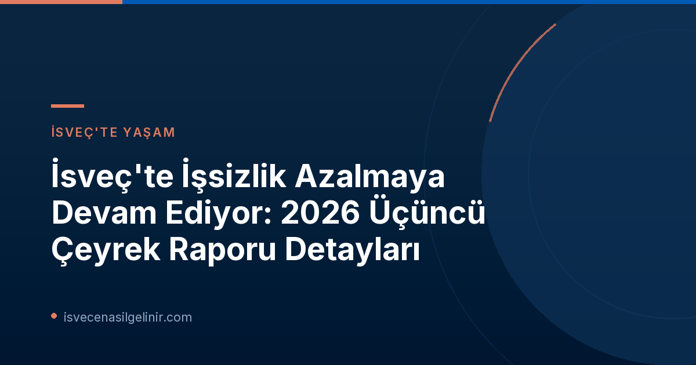

İsveç İş Piyasasındaki Genel Durum ve Raporun Önemi
Arbetsförmedlingen'in 2026 üçüncü çeyrek raporu, İsveç işgücü piyasasında gözle görülür bir iyileşme olduğunu ortaya koyuyor. Ülke genelinde kayıtlı işsiz sayısında belirgin bir düşüş yaşanırken, bu durum ekonominin toparlanma sürecinin bir göstergesi olarak kabul ediliyor. İşgücü piyasası analisti Evelina Sundin, raporun "ülke genelinde geniş bir düşüşe işaret ettiğini ve tüm illerde işsizliğin azaldığını" belirtiyor. Bu pozitif gelişme, İsveç'in ekonomik dayanıklılığını ve iş piyasasının adaptasyon yeteneğini vurgulamaktadır. Özellikle uzun süreli işsizliğin tüm gruplarda azalması, kapsayıcı bir büyüme için önemli bir adım olarak değerlendiriliyor.
Anahtar Veriler ve İstatistikler
Arbetsförmedlingen'in yayımladığı verilere göre, İsveç'teki işsizlik oranlarında önemli bir gerileme kaydedildi. İşte öne çıkan bazı anahtar istatistikler:
| Kategori | 2025 Üçüncü Çeyrek | 2026 Üçüncü Çeyrek | Değişim |
|---|---|---|---|
| Ortalama Kayıtlı İşsiz Sayısı | 369.000 | 347.000 | -22.000 |
| Genel İşsizlik Oranı | %7.0 | %6.5 | -0.5 puan |
Bu veriler, bir yıl içinde kayıtlı işsiz sayısında 22.000 kişilik bir düşüş yaşandığını ve genel işsizlik oranının %0.5 puan azalarak %6.5'e gerilediğini göstermektedir. Västerbotten dışındaki tüm illerde son iki yılda işsiz sayısında azalma gözlemlenmesi, bu olumlu tablonun genele yayıldığını ortaya koymaktadır.
Bölgesel İşsizlik Durumu: En Düşük ve En Yüksek Oranlar
İsveç'in farklı bölgelerinde işsizlik oranları çeşitli dinamikler sergilemektedir. Rapor, hem en düşük hem de en yüksek işsizlik oranlarına sahip belediye ve illeri detaylandırmıştır:
En Düşük İşsizlik Oranına Sahip Yerleşim Yerleri (2026 Q3)
- Gällivare (Norrbottens län): %2.0
- Jokkmokk (Norrbottens län): %2.3
- Pajala (Norrbottens län): %2.4
- Norrbottens län: %3.4
- Gotlands län: %3.5
- Jämtlands län: %4.1
En Yüksek İşsizlik Oranına Sahip Yerleşim Yerleri (2026 Q3)
- Perstorp (Skåne län): %13.0
- Malmö (Skåne län): %11.2
- Helsingborg (Skåne län): %10.5
- Skåne län: %8.4
- Södermanlands län: %8.1
- Västmanlands län: %7.8
Bu istatistikler, sverigemedborgarskapsprov.com adresinde bulabileceğiniz İsveç vatandaşlık testine hazırlananlar için de ülkenin ekonomik yapısı hakkında önemli bilgiler sunabilir. Özellikle belirli bölgelerdeki işgücü piyasası dinamiklerini anlamak, yerleşim ve kariyer planlaması açısından yol gösterici olabilir.
Uzun Süreli İşsizlikteki Gelişmeler
Son yıllardaki uzayan ekonomik durgunluk, uzun süreli işsizlik seviyelerinin yüksek seyretmesine neden olmuştu. Ancak Arbetsförmedlingen'in raporu, bu alanda da umut verici bir dönüşüm yaşandığını gösteriyor. Yaz ve sonbahar başı itibarıyla uzun süredir işsiz olan kişi sayısında kademeli bir azalma kaydedilmiştir. Analist Evelina Sundin'in de vurguladığı gibi, uzun süreli işsizliğin tüm gruplarda azalması, daha kapsayıcı bir toparlanma için hayati önem taşımaktadır. Bu gelişme, işgücü piyasasının dezavantajlı grupları da kucaklayarak daha dirençli hale geldiğinin bir işaretidir. Ancak Uppsala, Västra Götaland ve Västerbotten gibi birkaç ilde uzun süreli işsizlikteki düşüşün henüz yeterli seviyede olmadığı belirtilmiştir.
Geleceğe Yönelik Beklentiler ve Arbetsförmedlingen'in Rolü
Arbetsförmedlingen, İsveç işgücü piyasasının nabzını tutmaya ve geleceğe yönelik stratejiler geliştirmeye devam ediyor. Kurumun 2026-2028 yılları için bölgesel işgücü piyasası değerlendirmelerini içeren raporunun Aralık ayında yayımlanması bekleniyor. Bu raporlar, iş arayanlar, işverenler ve politika yapıcılar için değerli bilgiler sunarak, işgücü piyasasının gelecekteki seyrini anlamalarına yardımcı olacaktır. Arbetsförmedlingen, işsizliği azaltma ve istihdamı artırma misyonuyla, İsveç'in ekonomik refahına katkıda bulunmaya devam edecektir.
Sonuç ve Yorum
İsveç'teki işsizlik oranlarının genel olarak düşüş eğiliminde olması, ülke ekonomisi için olumlu bir işaret olarak değerlendirilmektedir. Bu gelişmeler, hem kısa hem de uzun vadede iş arayanlar için daha fazla fırsat anlamına gelmektedir. Ancak bölgesel farklılıklar ve uzun süreli işsizliğin bazı illerdeki durumu, hala dikkatle izlenmesi gereken alanlardır. İsveç, dinamik işgücü piyasasıyla her geçen gün daha da güçlenirken, Arbetsförmedlingen'in çalışmaları bu sürecin önemli bir parçası olmaya devam edecektir.
Referanslar:
- Arbetsförmedlingen Basın Duyurusu: https://arbetsformedlingen.se/om-oss/press/pressmeddelanden?id=CD8AD42674DF0C80&pageIndex=1&year=0&uniqueIdentifier=
İsveç'teki İş Fırsatlarını Kaçırmayın!
İsveç'in dinamik iş piyasasında kendinize yer bulmak ister misiniz? Güncel iş ilanlarına göz atın ve kariyerinizi İsveç'te şekillendirin.